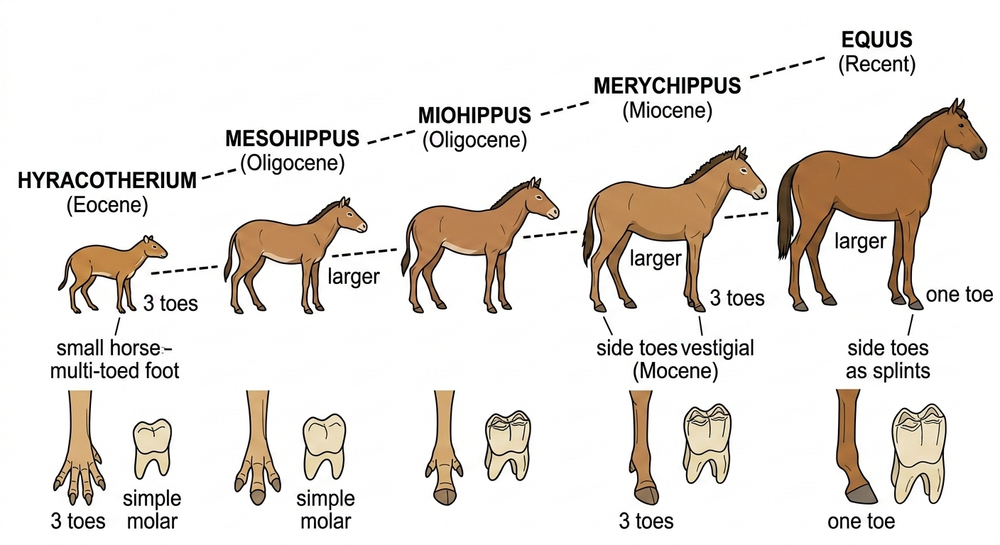

| Disclosure Enclosure - October 1997 |
| by Do-While Jones |
On September 6, we took the Science Against Evolution Information Booth to the Community Dinner at Kerr McGee Center. We talked to the people who visited the booth, showing them pages right out of the 1995 Biology textbook used at Cerro Coso Community College that present "proofs" of evolution that have been discredited for decades.
We documented these errors in a handout, "Education Behind The Times". We are including this handout as a special supplement to this month's newsletter.
It is no wonder that most people still believe in the theory of evolution. Although an increasing number of professional scientists are rejecting the theory of evolution on purely scientific grounds,1 that information isn't filtering down to the general public. Some of the most widely believed evidences for evolution have been discredited for years, but they still appear in public school textbooks. Three examples are: the origin of life; the evolution of the horse; and the Biogenetic Law.
It is popularly believed that experiments have been done that showed that the chemicals present in the early Earth's oceans and atmosphere could have formed amino acids, which could have combined to form proteins, which eventually turned into the first living cell. This myth arose from the publication of the results of experiments done by Miller2 and Fox.3
On March 28, 1997, we showed a video called, "Is Life Just Chemistry?" in which Michael Girouard, M.D., showed that these experiments did not prove that amino acids and proteins could have formed naturally. In fact, they prove that life could not have happened that way.
After we showed the video, our favorite critic complained that we had taken a cheap shot by bringing up Miller and Fox. He said that those two series of experiments had been done more than 40 years ago, and that the errors in them are well known. He said that "everybody knows" that those experiments led nowhere, and that no respectable scientists are doing work along those lines. He said modern research into the origin of life is taking other approaches, but has not produced any positive results yet.
We agree with everything our critic said, except for the part that "everybody knows" the origin of life experiments led nowhere. It is our position that the general public does not know that these experiments failed and mistakenly believes that they succeeded.
One reason we believe that many people are misinformed is because the biology textbook4 used at Burroughs High School presents the work of Miller and Fox as if it were long-established scientific proof of how life evolved.
The second reason is that the textbook used for Biology 2 at Cerro Coso Community College says this:
Organic Molecules Can Be Synthesized Spontaneously under Prebiotic Conditions
In 1953, inspired by the ideas of Oparin and Haldane, Stanley Miller, a graduate student, and his adviser Harold Urey of the University of Chicago set out to demonstrate prebiotic evolution in the laboratory. They mixed water, ammonia, hydrogen, and methane in a flask and provided energy with heat and electrical charge (to simulate lightening). They found simple organic molecules appeared after just a few days (Fig 19-2). In these and similar experiments, Miller and others have produced amino acids, short proteins, nucleotides, adenosine triphosphate (ATP), and other molecules characteristic of living things.5
The Encyclopedia of Evolution, which is highly critical of creationists in its sections on Flat-Earthers, Fundamentalism, Scientific Creationism, and Noah's Flood says:
Decades of persistent failure to "create life" by the "spark in the soup" method (or to find such productions in nature) have caused researchers to seek other approaches to the great enigma.6
But even the most promising, technically sophisticated attempts to demonstrate the origin of life from nonliving chemicals are still guesses and gropes in the dark. For almost a century, many scientists have taught that some version of the "spark in the soup" theory "must" be true. Repetition of this idea as fact, without sufficient evidence, has done a disservice to new generations by capping their curiosity about a profound and open question.7
Many people think that the fossils clearly show the evolution of the horse. The strongly anti-creation biased The Encyclopedia of Evolution has a section entitled "HORSE, EVOLUTION OF Saddled With Errors". (Gee, I wish I'd said that.) In their words,
[Yale paleontologist Othniel C.] Marsh's classic (straight-line) development of the horse became enshrined in every biology textbook and in a famous exhibit at the American Museum of Natural History. It showed a sequence of mounted skeletons, each one larger and with a more well-developed hoof than the last. (The exhibit is now hidden from public view as an outdated embarrassment.)
Almost a century later, paleontologist George Gaylord Simpson reexamined horse evolution and concluded that generations of students had been misled. In his book Horses (1951), he showed that there was no simple, gradual unilineal development at all.
... Marsh arranged his fossils to "lead up" to the one surviving species, blithely ignoring many inconsistencies and any contradictory evidence.8
If you look at the textbooks used at Burroughs High School9 and Cerro Coso Community College10, you will see beautiful illustrations showing the classic straight-line development of the horse still enshrined there.
 |
|---|
We don't know if those science teachers tell their students that this is an obsolete theory that has been discredited, but both books present the figures as if this development of the horse is still believed to be true by paleontologists. It may be possible that generations of students are still being misled.
One wonders why these textbooks still use the horse as their showcase example of a "progressive series of fossils leading from an ancient, primitive organism, through several intermediate stages, and culminating in the modern form."11 Could it be because they don't have anything else to offer in its place?
At one of the Fourth Friday Free Films that happened to feature Dr. Duane Gish, our favorite critic said that Dr. Gish should not be taken seriously because of his "unethical tactics." Our critic complained that Dr. Gish presents outdated theories that have long been rejected by evolutionists just to ridicule them. Our critic specifically mentioned the Biogenetic Law, which he says professional scientists who work in the field of embryology rejected 50 years ago.
Here is exactly what Dr. Gish says:
Almost all evolutionists used to believe (and many still do) that the human embryo (and all other embryos), during its development , takes on, successively, the appearance of its evolutionary ancestors in the proper evolutionary sequence. Ontogeny (embryological development) is said to recapitulate phylogeny (evolutionary development or "family tree"). This claim is still found in most high school and college texts, although most embryologists now believe this theory to be completely discredited.
Over fifty years ago Waldo Shumway of the University of Illinois said, with respect to the theory of embryological recapitulation (also called the "biogenetic law"), that a consideration of the results of experimental embryology "seem to demand that the hypothesis be abandoned."12 Walter J. Bock of the Department of Biological Sciences of Columbia University says: "... the biogenetic law has become so deeply rooted in biological thought that it cannot be weeded out in spite of its having been demonstrated to be wrong by numerous subsequent scholars."13
Many similar quotes to this effect may be cited (see, for example, the excellent section by Davidheiser on the theory of embryological recapitulation14).
One of the more popular ideas expressed by those who believe in embryological recapitulation is the idea that the human embryo (as well as the embryos of all mammals, reptiles, and birds) has "gill slits" during early stages of its development. The human embryo does have a series of bars and grooves in the neck region, called pharyngeal pouches, which superficially resemble a series of bars and grooves in the neck region of the fish which do develop into gills. In the human, however, (and in other mammals, birds, and reptiles), these pharyngeal pouches do not open in to the throat (thus they cannot be "slits"), and they do not develop into gills or respiratory tissue (and so they cannot be "gills"). If they are neither gills nor slits, how then can they be called "gill-slits"? These structures actually develop into various glands, the lower jaw, and structures in the inner ear.15
We agree with our critic on two points. We agree that the Biogenetic Law was discredited long ago. We agree that Dr. Gish attacks it. Our critic disagrees with Dr. Gish's statement that, "This claim is still found in most high school and college texts."
We don't know if it is still in most high school and college texts. But we do know the Encyclopedia of Evolution says the Biogenetic Law is a "fascinating concept, but the 'law' is untrue and was rejected by biologists around 1900. Nevertheless, it has become embedded in many school courses and textbooks and continues to be taught."16 [emphasis supplied]
We don't know if the Biogenetic Law is taught at Cerro Coso Community College, but the Biology 2 textbook used in that course has one paragraph devoted to the subject. Here it is in its entirety, including the bold-faced topic heading.
Embryological Stages of Animals Can Provide Evidence for Common Ancestry
In the early 1800's, the German embryologist Karl von Baer noted that all vertebrate embryos look quite similar to one another early in development (Fig. 16-14). Fish, turtles, chickens, mice, and humans all develop tails and gill slits early in development. Only fish go on to develop gills, and only fish, turtles, and mice retain substantial tails. Why do such diverse vertebrates have similar developmental stages? The only plausible explanation is that ancestral vertebrates possessed genes that direct the development of gills and tails. All of their descendants still retain those genes. In fish, these genes are active throughout development, resulting in gill- and tail-bearing adults. In humans and chickens, these genes are active only during early developmental stages, and the structures are lost or inconspicuous in adults.17
The scientifically established fact is that turtles, chickens, mice, and humans all DO NOT develop gill-slits at any time during development. One plausible explanation (we won't be so bold as to say, "the only plausible explanation") is that there never were any ancestral vertebrates possessing genes that direct the development of gills.
If it were true that humans have ancestral genes that used to result in gills, but no longer do, it would argue against evolution. It would mean that we once had the ability to breathe underwater but lost it. The ability to breathe underwater is an obvious survival advantage that should have been passed on to descendants according to the theory of natural selection. Apparently, only the comic book super-hero Aquaman retained that survival advantage. We haven't seen an Aquaman comic book in years, so he may be extinct, too.
We don't want you to be uninformed. We invite you to come to the Fourth Friday Free Films that we show at the Kern County Library at 7:30 PM on the fourth Friday of every month. We would also like to encourage you to join Science Against Evolution so that you can receive our newsletter every month.
Simply send your name and address, and a donation of at least $15, to Science Against Evolution, P.O. Box 923, Ridgecrest, CA 93556-0923. We will add you to our mailing list, and you will receive our newsletter every month for the next year.
| Quick links to | |
|---|---|
| Science Against Evolution Home Page |
Back issues of Disclosure (our newsletter) |
| Web Site of the Month |
Topical Index |
Footnotes:
1
"Heretics in the Laboratory", Newsweek,
September 16, 1996, page 82
(Ev)
2 Stanley L. Miller,
"A Production of Amino Acids Under Possible
Primitive Earth Conditions", Science.
Vol. 117, No.3046 (1953)https://www.science.org/doi/10.1126/science.117.3046.528 (PDF)
3
Sidney W. Fox and K. Baal, Molecular Evolution and the Origin
of Life, Dover Publishing (1953)
4
Sylvia S. Mader, Biology 3rd edition (1990),
pages 328 - 332
(Ev)
5
Teresa Audesirk, Biology 4th edition (1996), pages
365-366
(Ev)
6
Milner, The Encyclopedia of Evolution (1993) page 274
(Ev+)
7 Ibid. page 274
8 Ibid. page 222
9
Sylvia S. Mader, Biology 3rd edition (1990),
page 306
(Ev)
10
Teresa Audesirk, Biology 4th edition (1996), page 312
(Ev)
11 Ibid.
12
W. Shumway, Quarterly Review of Biology 7:98 (1932)
13
W. J. Bock, Science 164:684 (1969)
14
B. Davidheiser, Evolution and Christian Faith (Philadelphia:
Presbyterian and Reformed Publishing Company, 1969) page 240
15
D. Gish, Evolution: The Fossils Still Say No! (1995) pages 357-358
(Cr)
16
Milner, The Encyclopedia of Evolution (1993) page 44
(Ev+)
17
Teresa Audesirk, Biology 4th edition (1996), page 314
(Ev)